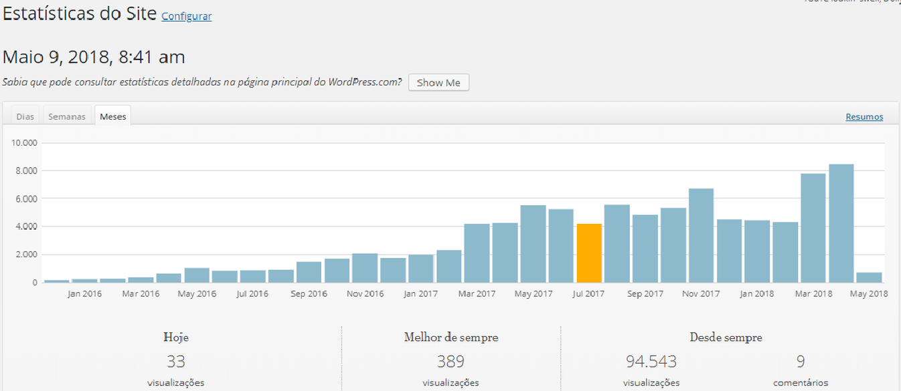
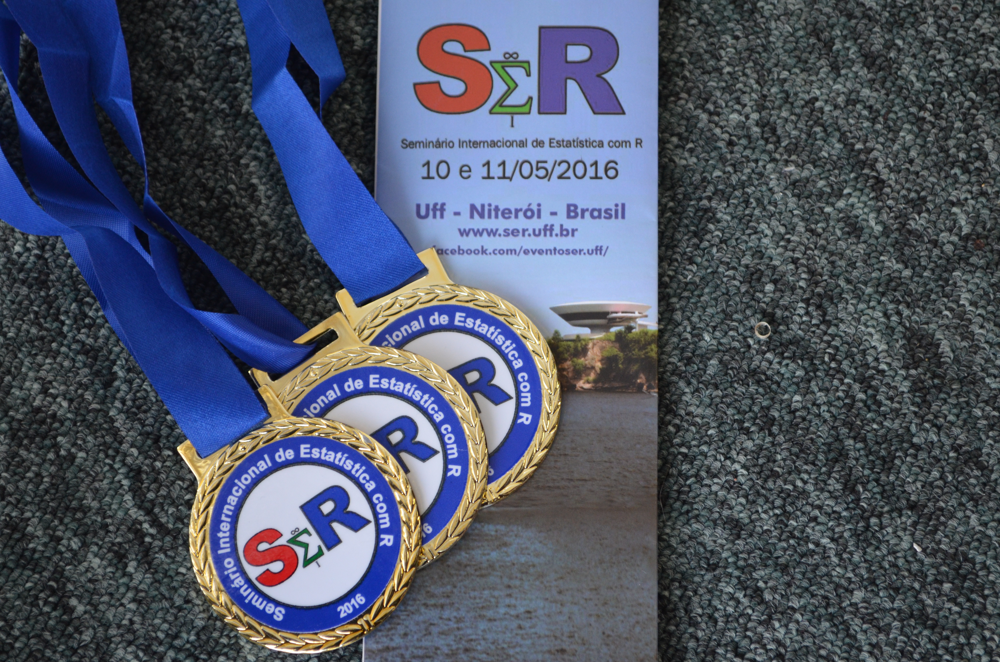
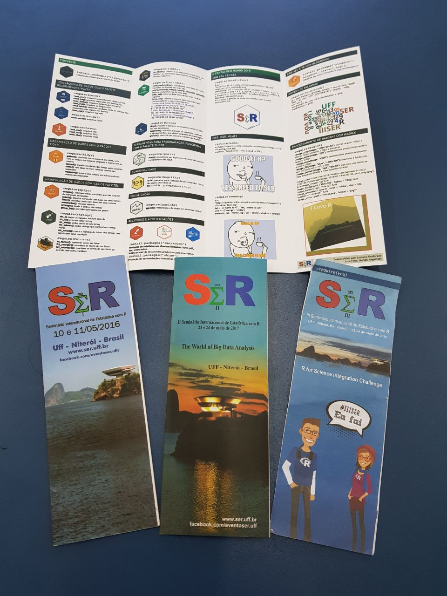
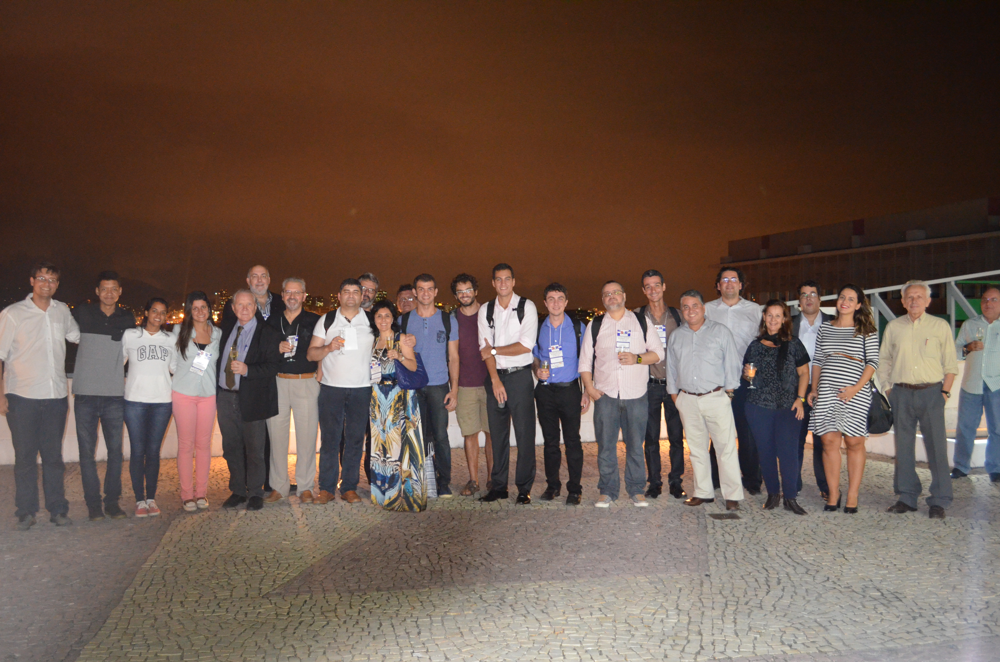
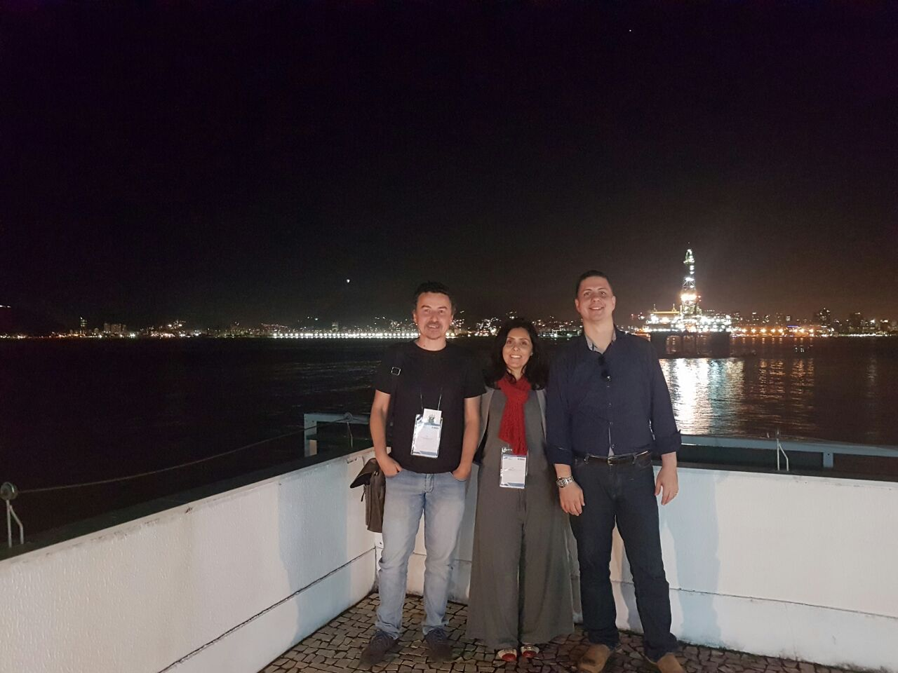
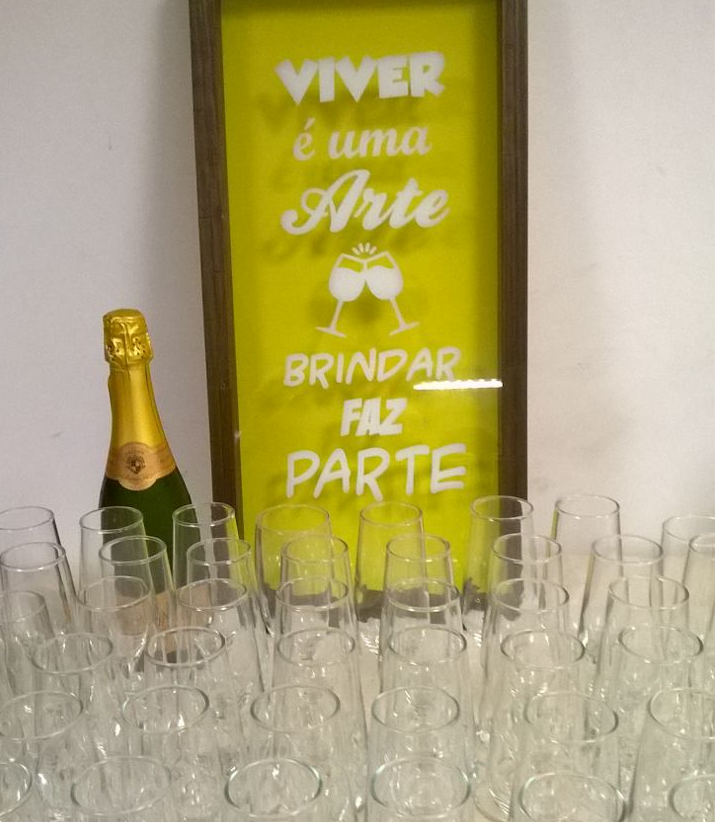

R for Science Integration Challenge
Luciane Ferreira Alcoforado
Estatística é com R!
Portal
Estatística é com R!
- www.estatisticacomr.uff.br 100 mil visualizações
- www.facebook.com/estatisticacomr mais de 1300 curtidas
- www.facebook.com/learn mais de 600 curtidas
- www.youtube.com/estatisticacomr mais de 9 mil visualizações e 400 inscritos
- Portal, vídeos, tutoriais, livros e treinamento.
Estatística é com R!

I SER 2016
I SER
- Parcerias Ence/IBGE, IMPA e apoio da CAPES.
- 3 oficinas: Visualização de Dados, Rcommander e Inteligência Artificial.
- 11 palestras: relatórios dinâmicos, BETS, Survey, Swirl, Big Data, Estatística Espacial, Planejamento Amostral, Modelos de Confiabilidade, Biologia Computacional, Aprendizado do R, Painéis Shiny.
- Espaço Blog, Espaço Empresa, Mesa Redonda e Laboratório de Experimentação para iniciantes
I SER
- Sessão Pôster: 25 trabalhos envolvendo 59 autores da CEFET, EMBRAPA, ENCE, ESTÁCIO-RN, FGV, IBMEC, MC15 CONSULTORIA, PUC-RJ, UFF, UFPB, UFPR, UFRJ, UNIRIO, UN. DE FLORENÇA. Premiação.
- E-book com capítulos dos palestrantes:
Statistics With R: Inovação no Mercado Profissional by Luciane Alcoforado on Scribd
- Anais do SER 2016, ISBN 978-85-98026-63-3:
Anais Ser 2016 by Luciane Alcoforado on Scribd
Premiação

II SER 2017
II SER
- Parcerias Ence/IBGE, IMPA, SBMAC e apoio da FAPERJ.
- 3 oficinas: ggplot2, Programação em R e Inteligência Artificial.
- 7 minicursos: MLG, Multivariada, Teoria da Resposta ao Item, Dashboards, Séries Temporais, Iniciando com R e Letramento Estatístico
II SER
- 6 palestras: Data Science em dados de Criminalidade, Comex Vis, Economia, Banco de Dados SQL e NOSQL, Modelos de Regressão Censurados, Modelos de dados de temperatura máxima.
- 3 conferências: Modelos de Previsão e Séries Temporais
- Espaço Blog e Laboratório de Experimentação para iniciantes
II SER
- Sessão Pôster: 27 trabalhos envolvendo 85 autores de CEFET, EMBRAPA, ENCE, FIOCRUZ, INEP, IPEA, PUC-RJ, UERJ, UFBA, UFCG, UFF, UFPA, UFRJ, UFRN, UFRRJ, UFSC, UNIMONTES, UNIRIO. Premiação.
- Sessão Oral: 21 trabalhos envolvendo 60 autores de BRITISH AMERICAM TOBACCO, CEFET, CHM, CMASM, EMBRAPA, IFNMG, MC15 Consultores, NOVA IMS, PUC-RJ, UERJ, UDESC, UFBA, UFG, UFF, UFPI, UFRGS, UFRJ, UFSC, UNIFACS, UNIMONTES. Premiação.
Premiação

II SER
- Anais do SER ISSN 2526-7299 e ISBN 978-85-94029-02-7:
Anais Ser2017 Vol2n1 by Luciane Alcoforado on Scribd
Anais Ser2017 Vol2n2 by Luciane Alcoforado on Scribd
- http://seruff.weebly.com/
Data Mining - Prof. Torgo

III SER 2018
III SER
- Parcerias Ence/IBGE, IMPA, SBMAC, UNIRIO e apoio da CAPES.
- 8 minicursos: Criação de Pacote, Relatórios dinâmicos, gráficos 2d e 3d, modelos politômicos, jurimetria, Web Scraping, Inferência Bayesiana, Dados financeiros.
- 8 palestras: mapas, distribuições estáveis, relatórios financeiros, PURRR, mercado de trabalho, aprendizagem do R, Shiny.
- 5 conferências: Aprendizagem, programação em R, Equações Estruturais, Teoria da resposta ao item, Mineração de textos, R-ladies
Iniciantes em R
- Minicurso Gratuito (online) de Introdução ao R com mais de 400 participantes
- https://goo.gl/forms/XWupYzh5dE0mhrFz2
Folder - Marcador de livro com comandos do R

Sessão Pôster III SER
- 24 trabalhos envolvendo 69 autores de 15 instituições: ENCE, IBGE, IFSC, INEP, PESAGRO, SEAPEC, UDESC, UFBA, UFF, UFG, UFMG, UFSC, UFSCAR, UNIRIO, USP. Premiação.
Sessão Oral III SER
- 26 trabalhos envolvendo 144 autores de 20 instituições: CEFET, FGV-RJ, IFF, IFMG, IFMT, MACROPLAN, MPPR, PUC-RJ, UCDB-MS, UEM, UERJ, UFBA, UFF, UFGD, UFMS, UFRJ, UN. SANTIAGO DE COMPOSTELA, UNIRIO, UPE, USP. Premiação.
Visão Geral dos trabalhos
- 60 trabalhos envolvendo 75 autores de 31 instituições: CEFET, ENCE, FGV-RJ, IBGE, IFF, IFMG, IFMT, IFSC, INEP, MACROPLAN, MPPR, PESAGRO, PUC-RJ, SEAPEC, UCDB-MS, UDESC, UEM, UERJ, UFBA, UFF, UFG, UFGD, UFMG, UFMS, UFRJ, UFSC, UFSCAR, UN. SANTIAGO DE COMPOSTELA, UNIRIO, UPE, USP.
… 2019
IV SER_py
- Novas parcerias.
- Integração R & Python.
- Ampliar a participação de Instituições da América Latina.
- Multidisplinaridade/Pesquisa/Mercado de Trabalho.
Convite
Todos juntos

Confraternização
Confraternização

Encerrando o dia 24/5
